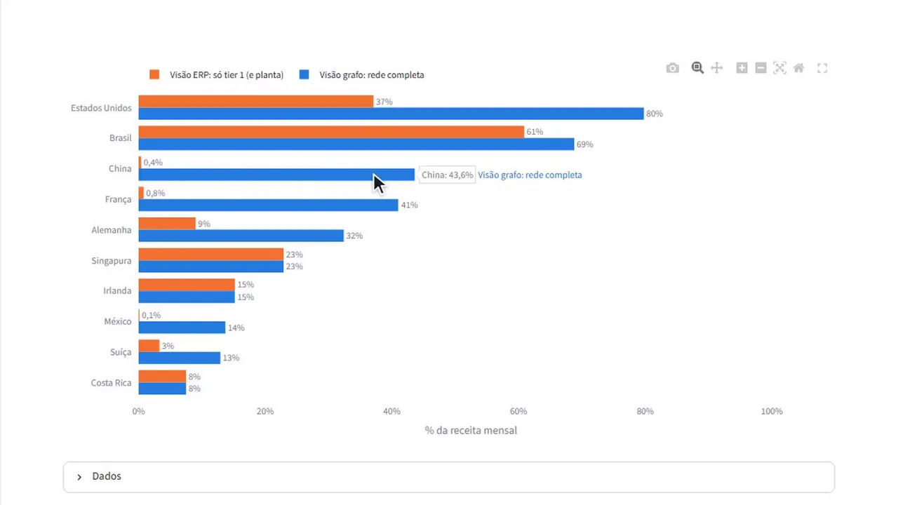

supplygraph-opme No ar
Qual fornecedor de tier 3 que eu nem conheço derruba metade da minha receita? Gêmeo digital em grafo (Neo4j) de uma cadeia de implantes que mostra o fornecedor do fornecedor que o ERP não vê, numa rede sintética calibrada com dados abertos reais.
0,4% → 43,6%da receita não existe sem a China: visão do ERP × visão do grafo
66 de 224componentes com 2+ fornecedores que, na prática, têm fonte única (29%)
10 de 10maiores riscos de receita são fornecedores tier-2/3; o primeiro tier-1 é o 74º
Neo4jCypherGraph Data SciencePythonStreamlitAuraDB